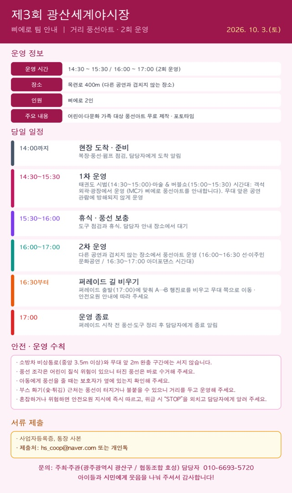

출연팀
삐에로 풍선아트
14:30~15:30 · 16:00~17:00

이미지를 누르면 크게 볼 수 있고, 길게 눌러 저장할 수 있습니다.
삐에로 팀께서는 축제 현장을 다니며 풍선아트로 시민과 아이들에게 즐거움을 전해 주십니다.
10월 3일(토) 운영 일정과 유의 사항을 안내드립니다. (첨부 이미지 참고)
운영 정보
- 일시: 2026. 10. 3.(토) 14:30 ~ 15:30 / 16:00 ~ 17:00 (2회 운영)
- 장소: 광산구 월곡동 목련로 400m (다른 공연과 겹치지 않는 장소)
- 인원: 삐에로 2인
- 내용: 어린이·다문화 가족 대상 풍선아트 무료 제작, 포토타임
당일 일정
- 14:00까지 현장 도착 → 복장·풍선·펌프 점검, 담당자에게 도착 알림
- 14:30~15:30 1차 운영: 태권도 시범(14:30~15:00)·마술 & 버블쇼(15:00~15:30) 시간대에 객석 외곽·광장에서 운영해 주세요. (MC가 삐에로 풍선아트를 안내합니다.) 무대 앞에서는 공연 관람에 방해되지 않게 운영해 주세요.
- 15:30~16:00 휴식 및 풍선 보충 (담당자 안내 장소)
- 16:00~17:00 2차 운영: 다른 공연과 겹치지 않는 장소에서 풍선아트 운영 (16:00~16:30 선·이주민 문화공연, 16:30~17:00 아더포댄스 시간대)
- 16:30부터 퍼레이드 출발(17:00)에 맞춰 퍼레이드 행진로(A→B)를 비우고 무대 쪽으로 이동해 주세요. 안전요원의 안내에 따라 주세요.
- 17:00 운영 종료 → 퍼레이드 시작 전 풍선·도구 정리 후 담당자에게 종료 알림
안전·운영 수칙
- 소방차 비상통로(중앙 3.5m 이상)와 무대 앞 2m 완충 구간에는 서지 않습니다.
- 풍선 조각은 어린이 질식 위험이 있으니 터진 풍선은 바로 수거해 주세요.
- 아동에게 풍선을 줄 때는 보호자가 옆에 있는지 확인해 주세요.
- 부스 화기(숯·튀김) 근처는 풍선이 터지거나 불이 붙을 수 있으니 거리를 두고 운영해 주세요.
- 혼잡하거나 위험하면 안전요원의 지시에 즉시 따르고, 위급 시 “STOP”을 외치고 담당자에게 알려 주세요.